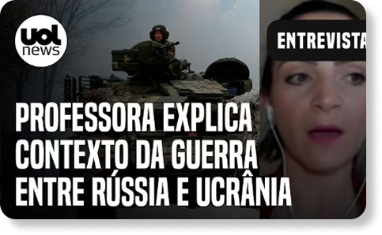

Diante da guerra entre Rússia e Ucrânia, o mundo acompanha as discussões em torno de uma importante aliança internacional: a Organização do Tratado do Atlântico Norte (Otan). Uma das principais causas do conflito foi a firme oposição da Rússia à possibilidade de a Ucrânia ingressar na Otan e, consequentemente, estreitar laços com os países ocidentais.
A Ucrânia não faz parte da Otan, mas o país buscou se aproximar do bloco. Por outro lado, a Rússia encarou esse movimento como uma ameaça à sua hegemonia no Leste Europeu. Os russos, inclusive, pediram garantias ao Ocidente de que a aliança não iria expandir mais para o Oriente — principalmente na Ucrânia. O pedido, no entanto, não foi atendido, o que frustrou o presidente russo, Vladimir Putin.

GET OVER HERE!!
O papel da OTAN nessa história
Contexto dos motivos da Russia
Qual é o papel da Otan neste conflito
